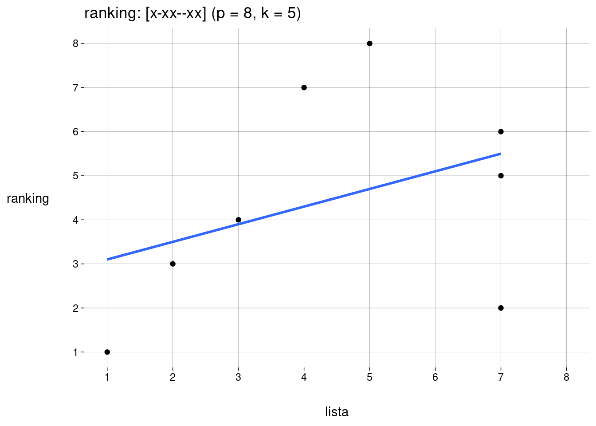
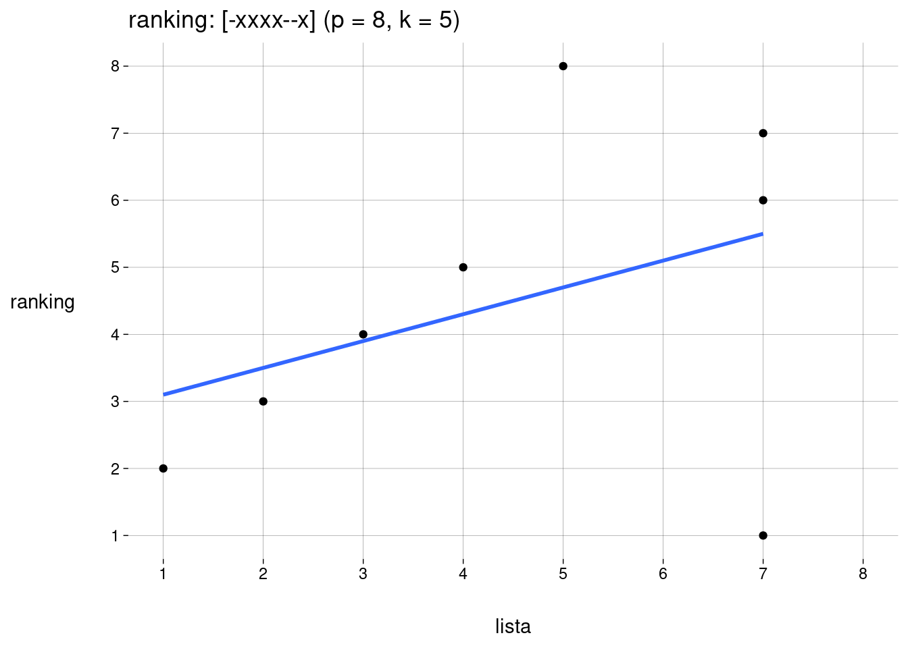
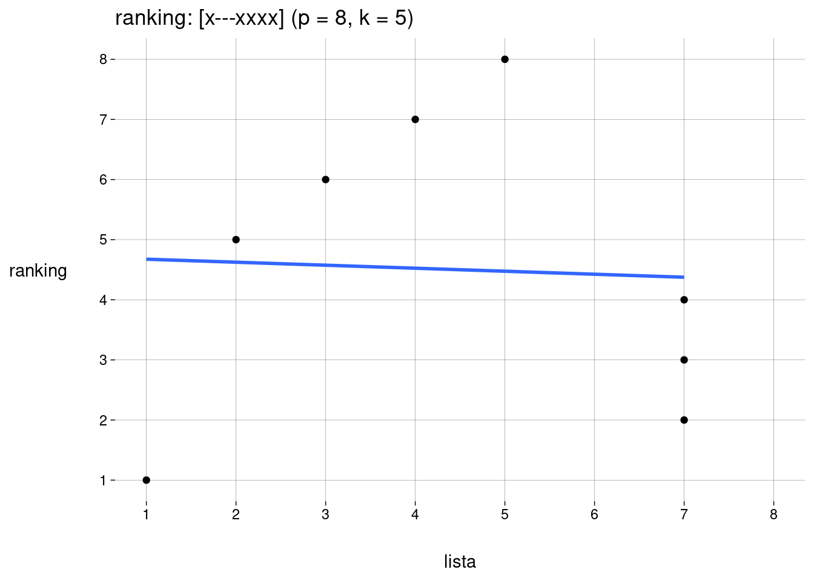
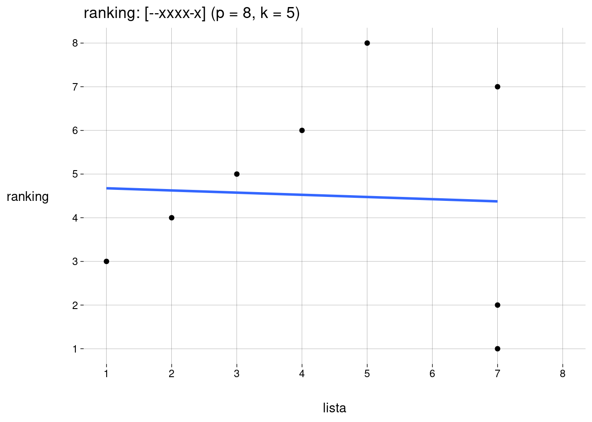
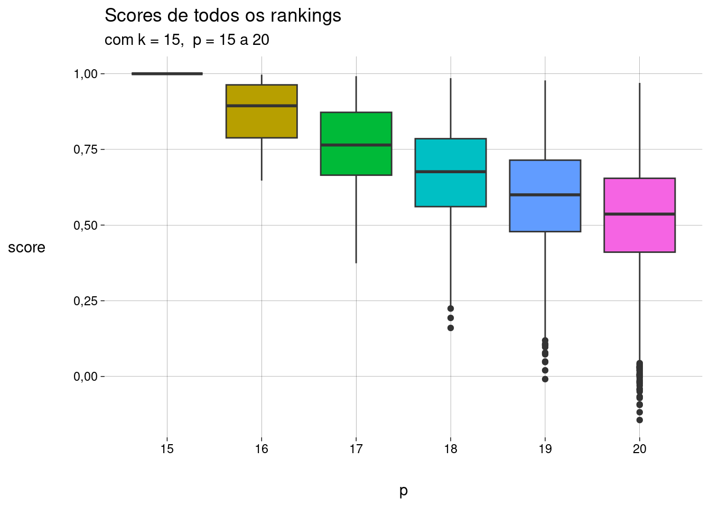
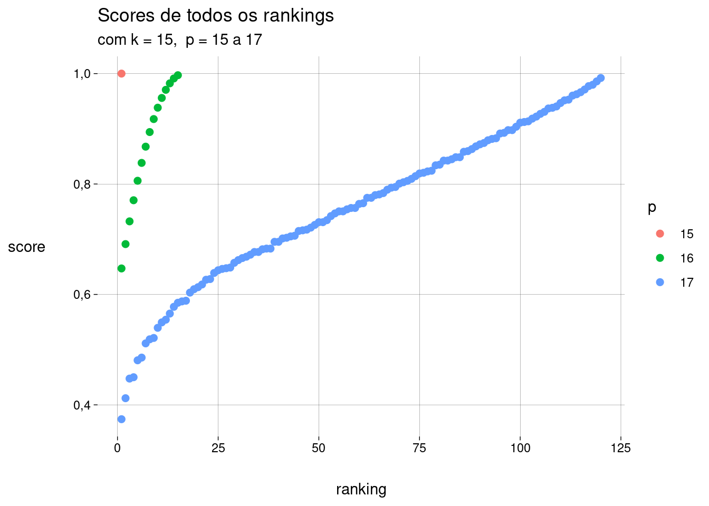
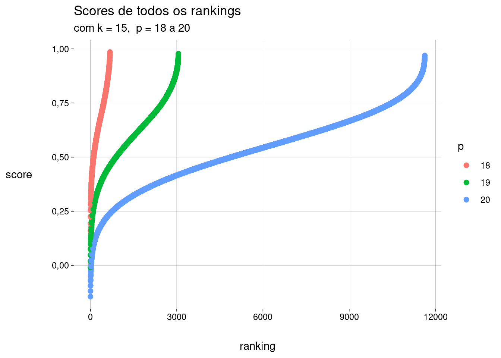
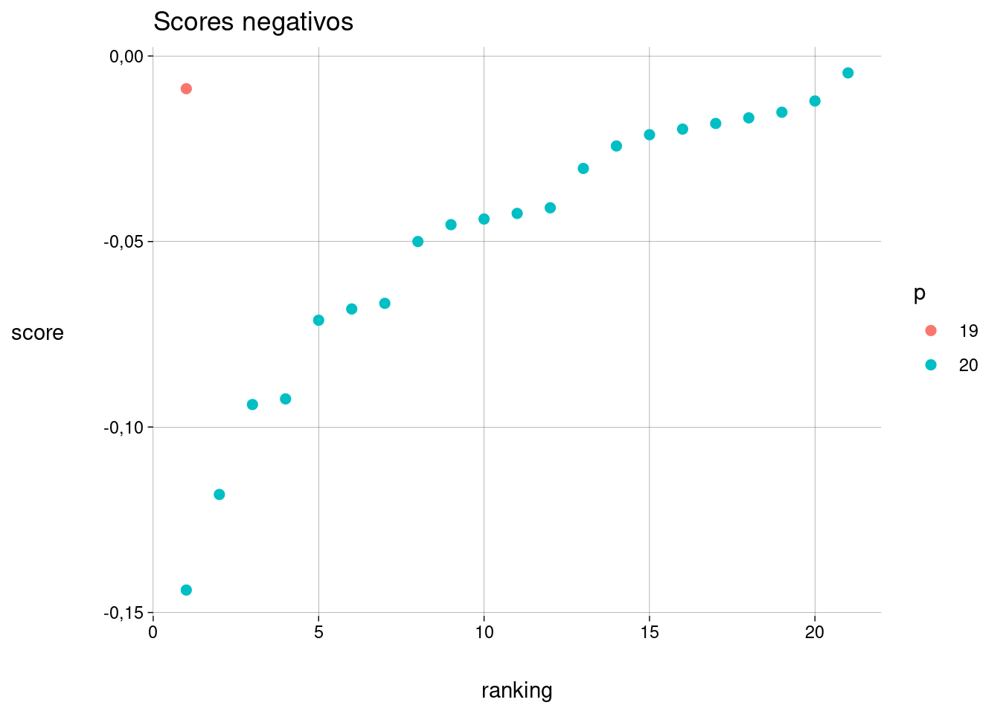

r <- rk('xxx-x')
s(r)[1] 0,9r <- rk('xxx-x')
s(r)[1] 0,9Para \(p = 8\), alguns exemplos:
s(
list(
rk('xxxxxxxx'),
rk('xxxxxx-x'),
rk('-xxxxxxx')
)
)[1] 1,0000000 0,9761905 0,3333333Eis todos os rankings de comprimento \(8\), com suas pontuações:
Perceba que pode haver empates:




Como a lista é dada e fixa, só faz sentido, na prática, comparar rankings com o mesmo valor de \(k\).
Vamos examinar, para uma lista com \(k = 15\), os rankings possíveis com \(p\) variando de \(15\) a \(20\).
São \(15.504\) rankings. Eis os \(100\) melhores:
Os gráficos abaixo mostram os scores atribuídos para todos os rankings com \(k = 15\) e \(p\) variando de \(15\) a \(20\), separados por valores de \(p\):



Negativos:
